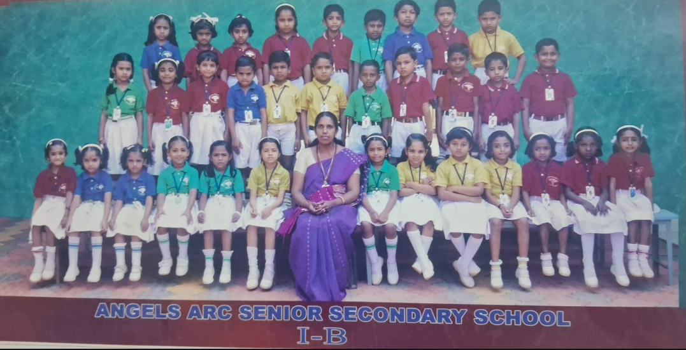
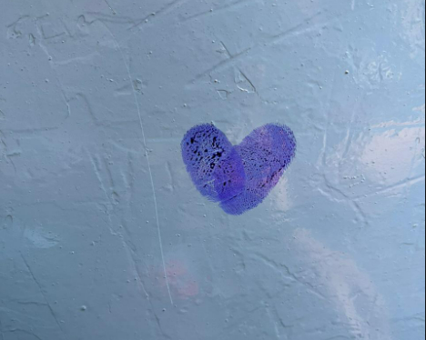
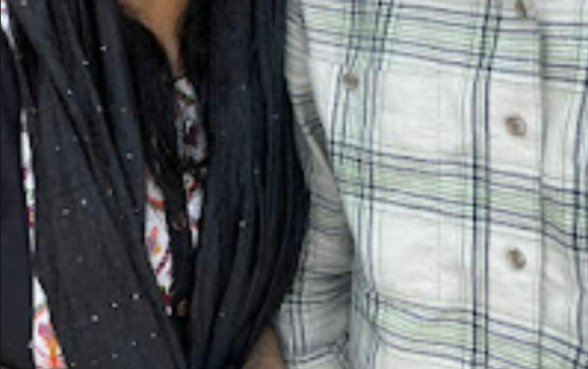
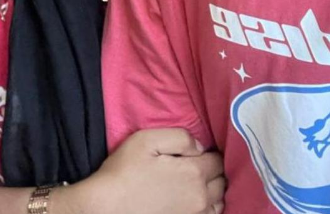

Happy Birthday, Pottaa ❤️
We were just kids. Small shoes, big backpacks, and no idea what life had in store for us.
First day of 1st standard. The classroom smelled like new notebooks and nervous excitement. I was sitting on the back bench, left side… finding my little corner in this big new world.
And you were on the middle bench, right side. I don't know why I noticed you. Maybe it was the way you sat — calm, steady, like you already belonged there.
Then the teacher asked you to watch who was making noise. A boy sneezed… and you turned and said his name. Just like that. No hesitation.

Years passed. You became class leader — of course you did. Even then, you had that quiet authority, that way of making people listen without raising your voice.
One day, you came to me. You asked me to secretly monitor the class while you stepped out. Me. Out of everyone. My heart jumped a little, though I'd never admit it.
I did it happily. Not just because you asked… but because it meant you saw me. Even just for a second.
5th standard came, and somehow, the universe decided we should sit together. Those paper games we played in the back of notebooks . I was terrible at hiding how happy I was.
I didn't say a word about how I felt. But every single day, I chose to be near you, and that felt like enough.
Sixth standard. We sat together the whole year. An entire year of stolen glances, shared whispers, and stories I'd never told anyone else.
You told me things about your life — the little things, the funny things, the real things. And I listened. Every single word. Because listening to you felt like reading a book I never wanted to end.
I'd watch you from the school bus window. Sometimes you'd see me through the glass and wave — that little hand gesture, that quiet "hi." I'd smile and look away, pretending my heart wasn't racing.

It started with your friend. He came to me and said — "Someone loves you."
My heart did something strange. I asked who. He smiled and walked away. And then… you came.
You. Standing there. Looking at me the way I had looked at you for years. And you said it yourself — that it was you. That it had been you.
I said YES. ❤️
It wasn't a grand moment. No fireworks, no movie music. Just you and me and the truest feeling I'd ever known. And somehow, that was more beautiful than anything I had imagined.
I got upset. You had told others about us. About what we were. And something in me — silly, scared, stubborn me — couldn't handle that.
I started ignoring you.I could see the hurt in your eyes, and still I looked away.
I don't know why I did it. Maybe I was scared of people knowing how much I cared. Maybe I thought if I stepped back, it would hurt less. But it didn't. It hurt more.
I've thought about that chocolate more times than I can count. The way you held it out. The way I turned away. You didn't fight, didn't argue. You just quietly put it back and walked away.
Not the argument. Just that silent walk away.
Different classes now. 8A and 8C — two rooms, two worlds, and yet somehow still the same orbit.
I'd catch glimpses of you through classroom doors. The way you'd look up at exactly the right moment. Eyes that said everything the mouth wouldn't.
There was something sacred about that silence. Like we had our own language — made of glances and almost-smiles and the space between words.
I loved you then. Quietly. Completely. And I think you knew.
Life pulled us in different directions. Separate schools. Different routines. Days that passed without seeing your face.
But at the end of 9th standard, we met. Just like that — an unexpected meeting that felt like breathing again after holding my breath for too long.
And that bus journey together — the way time slowed down, the way everything outside the window blurred while you sat next to me.
Tuition bus rides. Small shared moments carved out of ordinary days. Each one felt like a gift I hadn't expected.
We were growing up. But some part of us — the part that started on a school bench — never changed.
There was a wedding function — both of us there, somehow. The universe's doing, not ours.
We walked to the bridge. Just us. The light was soft, the air was warm, and you had that look on your face — the one I'd been memorizing for years.
We took photos there. Both of us laughing at something I can't even remember now. But I remember how alive I felt. How perfectly that moment fit.

The train station was loud. People everywhere — rushing, shouting, dragging luggage. And I stood there, trying very hard to hold myself together.
And then you hugged me.
i walked to the platform. I watched until I couldn't see you anymore. And then I stood there a little longer.
You went to Europe. I started engineering. We were now separated by thousands of miles, different time zones, different skies.
But you call me while you drive. Your voice filling the space between us like it always has — warm, familiar, mine.
I pick up every time. Even when I'm exhausted, even when I have deadlines, even at odd hours — because hearing your voice makes everything feel manageable again.
Long distance is hard. The missing never quite goes away. But every call, every message, every small piece of you I get — I hold it like it's precious. Because it is.

From that first little crush …
To every glance across classrooms…
To bus rides and silent smiles…
To that hug at the station I never wanted to end…
To calls across oceans while you drive…
Write something for the two of us to read someday — a wish, a promise, a memory, a dream.